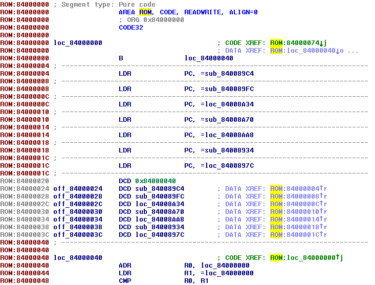
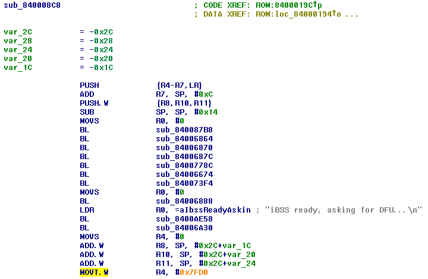
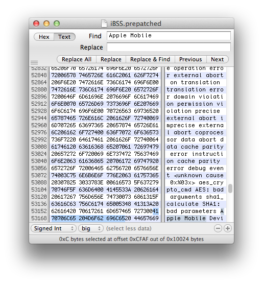
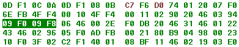
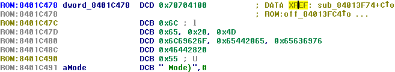

Patching bootchain
Most difficult part of entire guide. We have to make iBSS automatically load iBEC from some point of memory, make iBEC mount third partition and take our previously decrypted boot components therefrom. Also, we should add special property to Device Tree to disable use of Effaceable Storage. This will fix literally every issue related with data-protectioniBSS
First of all, decrypt and unpack iBSS image:reimagine original_iBSS iBSS.raw -iv iv -k key -r
Patch it out of signature checks using iBoot32Patcher:iBoot32Patcher iBSS.raw iBSS.prepatched
Important note: as reported, patches for iBSS described below don't work properly on iPhone 4s. For unobvious reason, second image is cleared from memory, so jump isn't performed
Now open it in disassembler (IDA Pro in my case) and switch CPU architecture to ARM Little-endian:
Rebase program (Edit->Segments->Rebase program) to value at 0x20 - 0x40 (0x84000040 - 0x40 = 0x84000000 in this case:

Then you should find kind of "initialization" function. It always contains LDR instruction with iBSS ready, asking for DFU... string, so you can easily find it:
Preparations done, now patch it!
Load address patch
In initialization function, there's something like MOVT.W R4, #0x4FE0. It will immediately rushes in your eyes, because hex value has orange color:This value tells iBSS where it should find iBEC to jump to. In case of N90AP, iOS 6.1.3 it's #0x4FE0 (so iBSS will look at 0x4FE00000), but may be different in bootloaders for other devices/versions. multi_kloader places second image at 0x7FD000000, so we have to replace current instruction by MOVT.W R4, #0x7FD0 Come to hex view and replace current hex representation of instruction by C7 F6 D0 74. Now it should look in such way:

Disable usb_wait_for_image patch
Now we have to disable iBSS'es USB routines. In order to do that we'll need to find the place where usb_wait_for_image function called and replace this call by NOPsHow to find this function? As you probably know, iDevice with running DFU-bootloader is usually recognized as USB device named Apple Mobile Device (DFU Mode). It should be easy to determine where this string is loaded and after that find usb_wait_for_image root function call by following CODE XREFs
Search for Apple Mobile string in hex-editor. You'll find this string somewhere in the end of file:

Then search for address of found string (CFAF in this case):
This time it'll find 2 LDR R0, =0x8400CFAF instructions. Go to one of them and follow CODE XREFs until you back to initialization function:
Note that IDA points cursor to place when function called when you follow CODE XREFs
Aye, we found it! sub_8400993C is usb_wait_for_image routine we looked for. All we need is replace this BL by NOP NOP (NOP means No Operation). Hex representation of NOP instruction is 00 BF. Switch to hex view and replace 4 bytes of BL by 2x 00 BF:


What if you haven't found LDRs
As I said above, unfortunately, string recognizer in IDA works extremely bad. That's why you couldn't find your strings sometimes. For example, here is how Apple Mobile Device (DFU Mode) string was recognized in some bootloader:First part of the string is just byte mess. You shouldn't be surprised string wasn't found
We use external hex-editor to find string's position, so problems will go away, LDRs will just look like this: LDR R0, =0x8400CFAF, right? Sometimes it's wrong:
Why? That's why:
It may be too complicated to find such messed instruction, so go to address you got in hex-editor. You'll only see some byte mess:

Select it:
Right-click and Undefine. XREF should now appear in the right place:
Search for your string's address again or just follow XREF
Producing difference file and applying it
File - Produce files - Produce DIF file...Clone prepatched iBSS:
cp iBSS.prepatched iBSS.patched
Apply difference using ida_patcher:
ida_patcher -i iBSS.patched -p iBSS.dif
...or just replace bytes manually using hexadecimal editoriBEC
Decrypt and unpack iBEC image:reimagine original_iBEC iBEC.raw -iv iv -k key -r
Patch it out of signature checks and inject boot-args using iBoot32Patcher:iBoot32Patcher iBEC.raw iBEC.prepatched -b "rd=disk0s1s3 -v amfi=0xff cs_enforcement_disable=1"

Before loading gotten image into disassembler, let's talk about applied boot arguments:
- rd=disk0s1s3 - tells kernel which disk node should be used as root device
- -v - enables verbose mode. You'll see kernel log instead of logo
- amfi=0xff cs_enforcement_disable=1 - disables code signing enforcement
Rebase program (value at 0x20 - 0x40 (0x5FF00040 - 0x40 = 0x5FF00000 in this case)):
boot-command=upgrade patch
iBoot Stage 2 (flashable iBoot and iBEC) has set of local hardcoded variables (boot-command, build-style, loadaddr, bootdelay, etc.), but if same variable exists in NVRAM, NVRAM's value will be used instead of hardcodedAs mentioned in previous part, we'll use OTA routines to untether dualboot. Natively iOS sets upgrade string to boot-command NVRAM variable and then reboots. After reboot iBoot detect this variable, mounts third partition (also known as upgrade partition), grabs APTicket and iBEC and then loads them. When iBEC is initializing, it checks boot-command too, and if it equals to upgrade iBEC mounts upgrade partition, grabs APTicket, Apple logo (it never works originally though, but we'll fix it), DeviceTree, ramdisk, kernel cache and boot them all. OTA update begins
Setting this variable manually in NVRAM is bad idea. First OS'es iBoot will detect it too, signature checks will obviously fail and as result device will stuck in Recovery mode. It's not being possible to delete this variable from iBoot shell, so you'll be forced to restore
Instead of setting it to NVRAM, let's re-hardcode original boot-command's value (originally, it's usually fsboot) to upgrade. NVRAM won't be touched, so first OS'es iBoot will stay safe
First of all, we need find two strings and write down their adresses. fsboot:
...and upgrade:
Important note: you'll get 2 occurrences, but you need only the one with 00 around it, other one is part of failed to mount upgrade partition string
Now search for address of first string (3553A in this case) in IDA:
The only occurrence will be found in function which sets local iBoot variables. All of these addresses in LDR instructions point to strings with variable's names and their values, but their recognition in IDA never works properly
We need to replace this LDR R1, =address_to_upgrade_string by LDR R1, =address_to_upgrade_string. To do that, go to string reference section below function:

Click to address of fsboot (0x5FF3553A in this case) and switch to hex-view:
Highlighted value (3A 55 F3 5F in this case) is little-endian representation of address in memory for fsboot string. So, all we need to do is add base address (0x5FF00000 in this case) to the address of upgrade string, convert it to little-endian byte order and replace 3A 55 F3 5F by gotten value
0x5FF00000+0x35275 = 0x5FF35275. Revert byte order - 75 52 F3 5F. Patch bytes in disassembler
Most likely you'll see raw address instead of upgrade:
Go to this address and you'll get that's because IDA often recognize strings as instructions or raw bytes:
You may undefine them manually though. You'll understand you did this patch well if DATA XREF appeared in the right of upgrade string:
Sometimes it may disappear though, look here instead:
auto-boot=true patch
When iBEC detects upgrade boot-command, it always sets auto-boot variable to false (in NVRAM too), this causes Recovery mode on the next normal boot. That's not fatal, it's possible to close Recovery, but obviously inconvenientWe'll fix it in the same way as we patched boot-command variable's value - just replace string reference from false to true. Thereby it will always set it to true and boot loops won't happen
Let's find upgrade routines. It may be done by searching for failed to mount upgrade partition\n string:
Variable manipulation stuff starts from 0x12EE (LDR at 0x12EE actually points to auto-boot string, LDR at 0x12F2 points to false string). Now you should be able to patch it yourself. That's how proper patch should look like:
Apple Logo patch
Most complicated patch. For unobvious reason, Apple logo appearance is broken on upgrade boots, there is code for this purpose, but it doesn't work. I've made fix:Finally fixed Apple logo appearance in untethered dualboots /cc. @JonathanSeals pic.twitter.com/Njj6LHM4Mf
— Nyan Satan (@nyan_satan) April 14, 2017
What must be done to make it appear?
- Apple logo's IMG3 must be loaded from the filesystem to loadaddr (result is same when you simply send some IMG3 through iBoot shell). It seems to be the only thing performed in OTA-routines to make logo show. Or that function (sub_5FF1BFF8 in this case) is partially broken:
Shortly after logo's load, Device Tree loads too and replaces logo's image in memory. So we must do magic before that - Obviously that's not enough to get logo appear. As you know from tethered boot proccess, it's also needed to send setpicture command and change background color using bgcolor R G B
- Can we call setpicture and bgcolor manually in assembly? Sure!
How to find all these functions offsets
- load_applelogo: can be found in OTA routines (see screenshots above, it's sub_5FF1BFF8 in this case)
- setpicture_cmd: can be easily found using iBoot32Patcher:
iBoot32Patcher iBEC.raw /dev/null -c "setpicture" 0x80000000
Subtract 0x1 from highlighted value. Result is the offset of this function
- set_bgcolor and apply_bgcolor: can be found in the same manner as we did it for setpicture_cmd:
iBoot32Patcher iBEC.raw /dev/null -c "bgcolor" 0x80000000
Subtract 0x1 from highlighted value and go to resulting offset (0x5FF00FCC in this case):

Branches below 3x LDRB and MOV point to set_bgcolor and apply_bgcolor functions respectively (0x5FF1BD30 and 0x5FF1C04C in this case)
set_applelogo function
As you saw on screenshot above, you have to write dedicated function which will load IMG3 with logo from filesystems, call setpicture command and change background color. Best place for it is free area around build-version strings:It's hard to explain entire process of writing function step-by-step, so I'll just show result:
...place where we call it (there were APTicket and Apple logo originally, you saw it above):
With ARM To Hex Converter and Branch Finder it shouldn't be very difficult
Applying patches
Process is the same as we did for iBSS. The only difference is that we also need to pack patched bootloader into IMG3 container:image3maker -t ibec -f iBEC.patched -o iBEC.img3
DeviceTree
no-effaceable-storage patch
Super important thing. This patch disables use of Effaceable Storage. Briefly, it's special place where data-protection keys are stored. It's much better to disable it on second system to prevent conflictsAs I said before, it's better to perform first boot of second OS without keybag generator just to test this patch. If you do something wrong there, keybag generator will regenerate Effaceable Storage's keys, that will mess up your first iOS instance and you'll be forced to restore
Standardly, decrypt and unpack DeviceTree:
reimagine original_dtre dtre.raw -k key -iv iv -r
...and pack it back:image3maker -t dtre -f dtre.raw -o devicetree
Then open it with imagine:imagine -d devicetree
It will output human-readable representation of DeviceTree:DeviceTree parser will be very useful to check whether patch is correct or it's not
Now patching itself. All we need to do is add no-effaceable-storage property to default section. Open raw DeviceTree in hex-editor and select area from firmware-min-capacity to next string (platform-name usually) and copy it to clipboard:
Then search for use-lwvm string:
Paste bytes from clipboard to this place, but don't replace use-lwvm:
Replace firmware-min-capacity by no-effaceable-storage (only ASCII symbols surely): There is byte in the beginning of each section which defines number of properties in the section (should be always in few bytes before AAPL,phandle in case of default section we edit): Since we add 1 additional property to the section, we must also add 0x1 to this number (0x7+0x1 = 0x8 in this case): Save changes and repack:
image3maker -t dtre -f dtre.raw -o devicetree
...and check it using imagine:imagine -d devicetree
You'll know you patched your DeviceTree well if no-effaceable-storage property appeared and imagine haven't crashed with Segmentation fault: 11
Send resulting files to device
Send iBSS and iBEC to device somewhere near root directory. Doesn't really matter where exactlySend patched and packed DeviceTree to /mnt1. It must have name devicetree. As you remember, we already placed Apple logo, ramdisk and kernel there
Storage is partitioned, root filesystem is restored and modified and bootchain components are patched. It's time to finally boot it all!